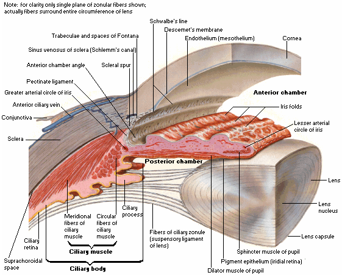
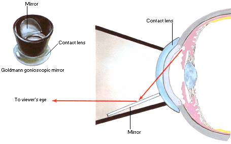

Anterior chamber (AC)
* Định nghĩa:
+ Tiền phòng: là khoảng không gian trong nhãn cầu chứa đầy thủy dịch và giới hạn phía trước là giác mạc và phía sau là mống mắt và mặt trước của thể thủy tinh. Độ cao trung bình của tiền phòng là 3.1mm.

Hình: Tiền phòng và cấu tạo những thành phần liên quan
+ Tiền phòng liên quan mật thiết với góc tiền phòng (Anterior Chamber Angle) là vùng chính trong lưu thông thủy dịch. Nó được tạo thành bởi mặt trước của thể mi và hệ thống bè(Trabecular Meshwork).

Hình: Soi góc tiền phòng bằng kính soi góc Goldmann
Hình: Góc tiền phòng được quan sát bằng kính Goldmann, với các cấu trúc: Đường Schwalbe, Ống Schlemm, Cựa củng mạc, Bè, mống mắt và đồng tử. Hình dưới là cấu trúc của một góc tiền phòng hẹp.
+ Để đánh giá góc tiền phòng người ta thường sử dụng hệ thống phân độ góc của Shaffer như hình: